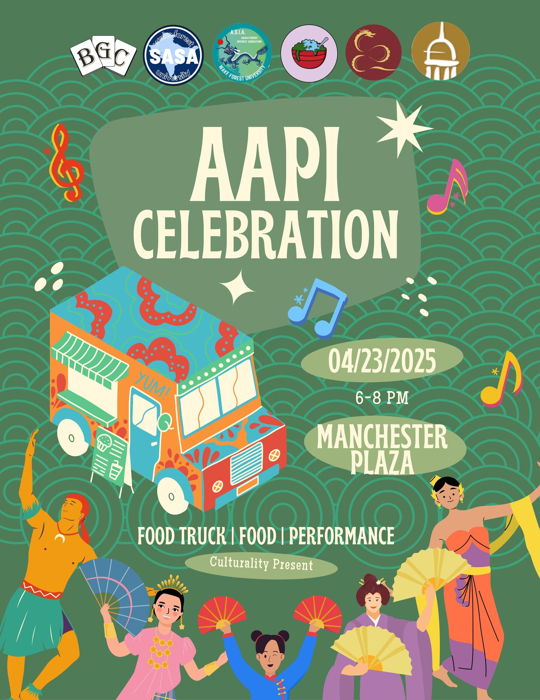
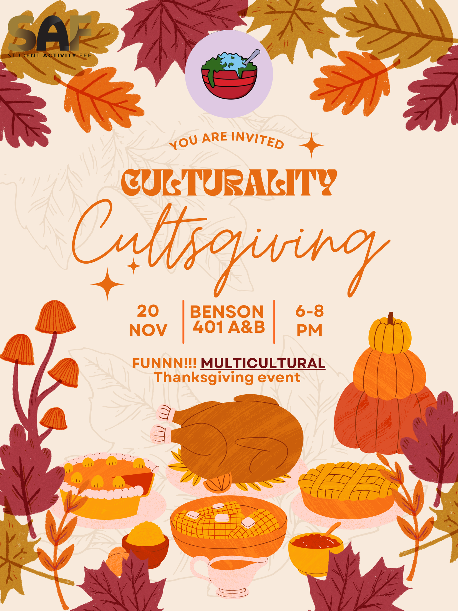
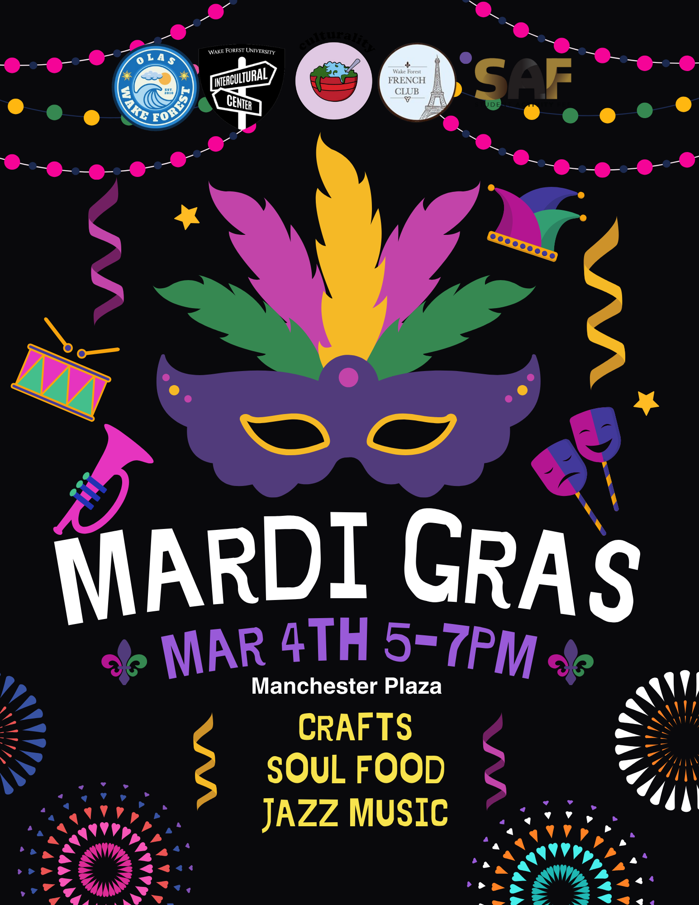
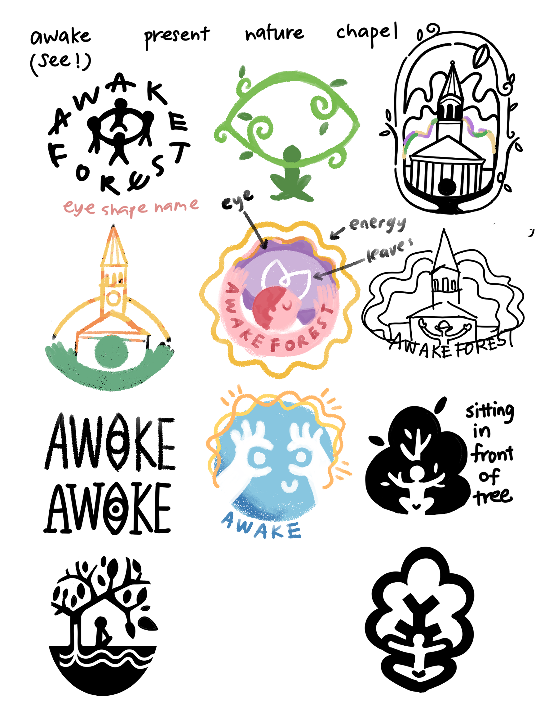
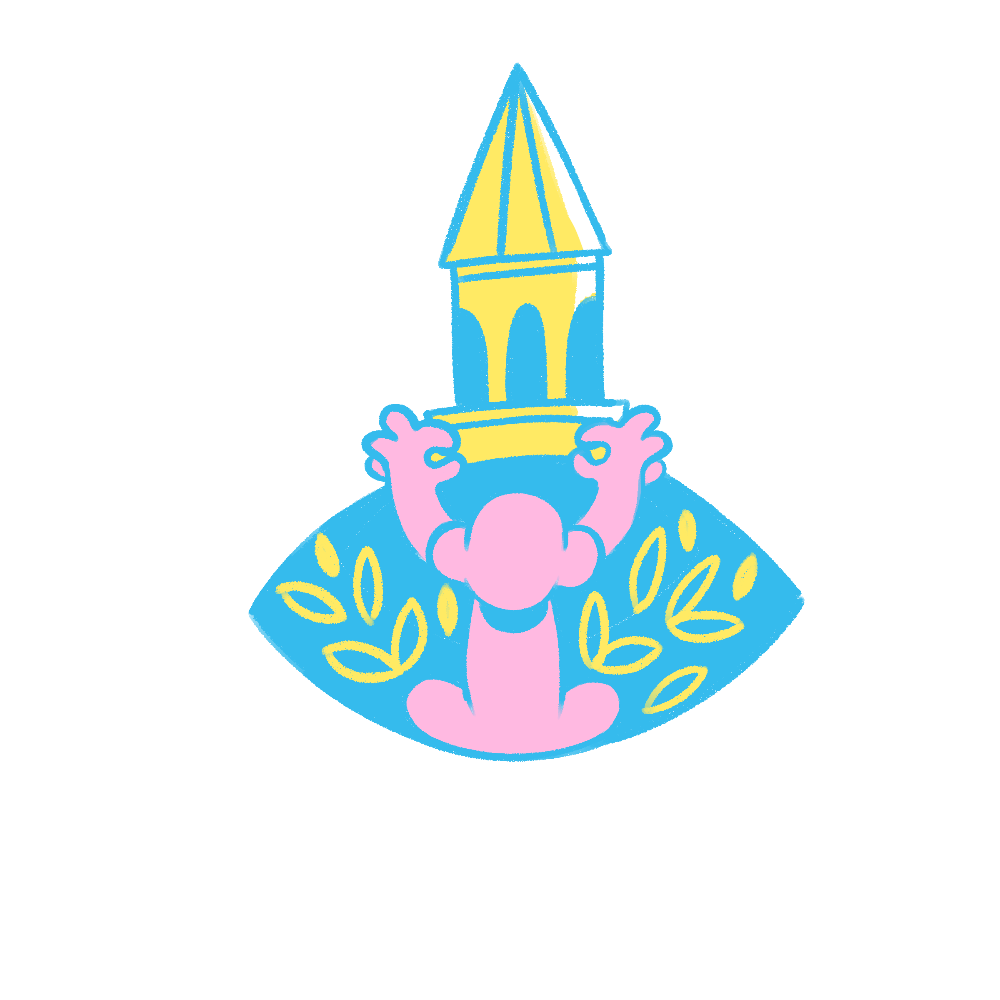
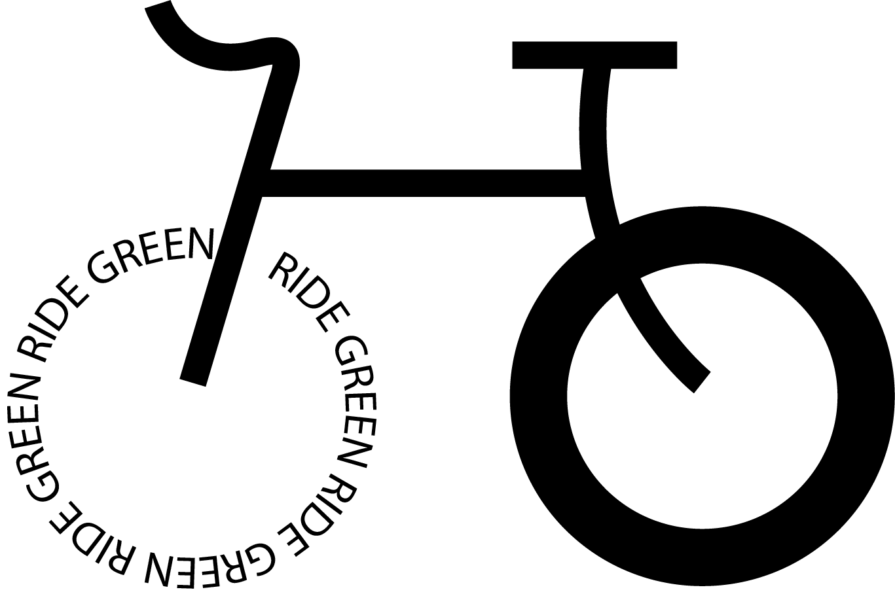

Identity + community
Brand Work
Three compact studies in making organizations easier to recognize, understand, and feel invited into.
01 / Community graphics
Culturality Club
I created event and social graphics for a multicultural campus community. The work translated different celebrations into clear, welcoming visuals while keeping each event's cultural character visible.
- Need
- Help students quickly understand and feel invited to events.
- Approach
- Strong hierarchy, approachable tone, and event-specific visual cues.
- Focus
- Belonging, cultural care, and consistency across formats.



02 / Brand identity
Awake Forest
A logo and identity study for an imaginative forest concept. I moved from exploratory marks to a more focused visual system, balancing organic character with practical recognition.
- Need
- A distinctive identity with room for storytelling.
- Approach
- Iterative sketching, mark refinement, and usage testing.
- Learning
- A strong brand idea must still work at different sizes and contexts.


03 / Logo design
SMP Bike Business
A compact identity designed to communicate movement and stay recognizable across practical business applications.
- Need
- A memorable mark for a cycling-focused business.
- Approach
- Simplified forms, energetic direction, and scalable construction.
- Focus
- Motion, clarity, and everyday usability.
